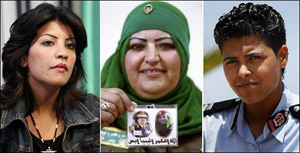

|
|

زنانی که قذافی را "آزادکننده زنان" می دانند
چهار شنبه25 خرداد 1390
شهرزادنیوز: با وجود انتشار گزارشهایی مبنی بر تجاوز نیروهای قذافی به زنان، زنانی هم هستند که متعصبانه از قذافی دفاع میکنند و هسته سختی از مدافعان آتشین او را در دستگاه پلیس و عرصه سیاست تشکیل میدهند.
نسرینه منصور، پلیس 25 ساله، یکی از این زنان است که وقتی تلفن همراهش زنگ می زند، عکسی از قذافی هم بر صفحه آن ظاهر می گردد. قذافی از نظر وی "آزاد کننده زنان" محسوب می شود، چرا که، تأکید می کند، این قذافی بود که راه را برای ارتقای زنان در جامعه لیبی باز کرد و به آنها امکان داد تا بتوانند به عنوان پلیس، مهندس، سیاستمدار، قاضی و وکیل مدافع کار کنند.
از دیگر مدافعان قذافی که موقعیت اجتماعی خود را مدیون قذافی می دانند، افزون بر اعضای گارد محافظ وی که از زنان تشکیل شده است، راضیه ال بُعدی، مجری 25 ساله تلویزیون، و ابتسام سعد الدین 35 ساله، افسر سابق، است.
طبق این گزارش، قذافی برای کاستن از نفوذ روسای قبایل و روحانیون، به زنان امکان داد که تا حد وزارت ارتقا یابند و طبق آمار در سال 2006 بیش از 27 درصد زنان لیبی شاغل بوده اند.
از دیگر سو، زنانی هم در میان مخالفان هستند که خواهان دمکراسی و برابری حقوقی هستند، اما در میان رهبران اپوزیسیون در بنغازی تنها یک زن انتخاب شده، که به گفته اناث ال دُرسی، فعال 23 ساله، این امرموجب سرخوردگی آنها شده است.
هم اکنون در خیابانهای تریپولی، پایتخت لیبی، زنان اونیفورم پوش مسئولیت کنترل شهر و رعایت قانون را بر عهده دارند و مردان نیز این امر را پذیرفته اند.